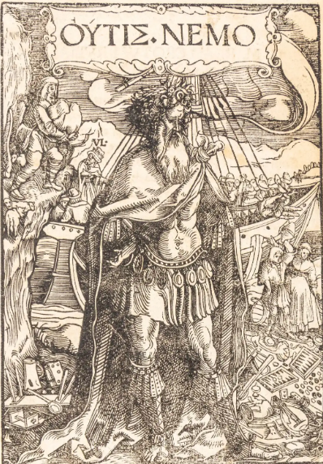

Certē! Ecce fabula de puero et lupō:
In quodam oppido habitābat puer nomine Marcus. Marcus erat valde audāx et fortis. Unō diē, cum in silvam ambulāret, lupum magnae magnitudinis invenit. Lupus, ferox et famēlicus, ad eum appropinquāvit.
Marcus, animō fortī, non timuit. Statim inquit, "O lupus, quid agis in silvā nostra?"
Lupus respondit, "Esurio et cibum quaero. Tu, puere, cibus idōneus mihi esse potes."
Marcus, non trepidans, dixit, "Nōlō tē laedere, lupē. Sed neque tibi parcere possum."
Tum lupus, irātus, conātus est Marcum captūrus. Sed Marcus, artibus suis utēns, lupum fallēbat et ā perīculō sē servābat. Post longum certāmen, lupus tandem cōnfectus est et recessit.
Marcus, victor, domum contendit. Multīs perīculīs subactīs, sapientiam et virtūtem suam comprobāvit.